All of this equipment is available for any club member to use — whether you're a complete beginner or a seasoned observer. Don't worry if you've never looked through a telescope before! Experienced members are always on hand at observing sessions to help you get set up and guide you through using the gear.
You can also borrow equipment for extended periods to use at your own pace. Just have a chat with any committee member or fellow member at one of our monthly meetings to arrange it. We want everyone to get the most out of the club's equipment, so please don't hesitate to ask!
Back in 1987, SAC designed and built an F/5 12" Newtonian Dobsonian telescope. By the late 2000s, the scope was beginning to disintegrate due to age and use. In 2007, the committee decided to fully refurbish it rather than scrap it, preserving the history tied up in the scope. It is now in full working order and offers magnificent deep sky, lunar and planetary views.
Refurbishment work performed:
- All wood varnished, internals painted matt black
- New primary/secondary mirror cells and spider
- New focuser and Telrad finder added
- Sliding counterbalance system added
- Altitude axis spring added with Teflon bearings
- Azimuth Formica base added with wheels
- Brass carrying handles added
- Access hatches added for mirror inspection / collimation
- Both mirrors recoated
- Comprehensive set of eyepieces and laser collimator added
- Solar filter constructed
Click here to see the eyepiece set.
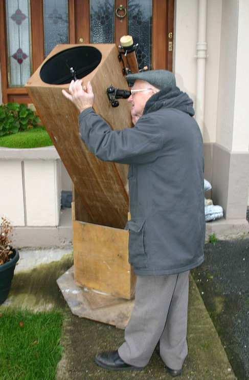
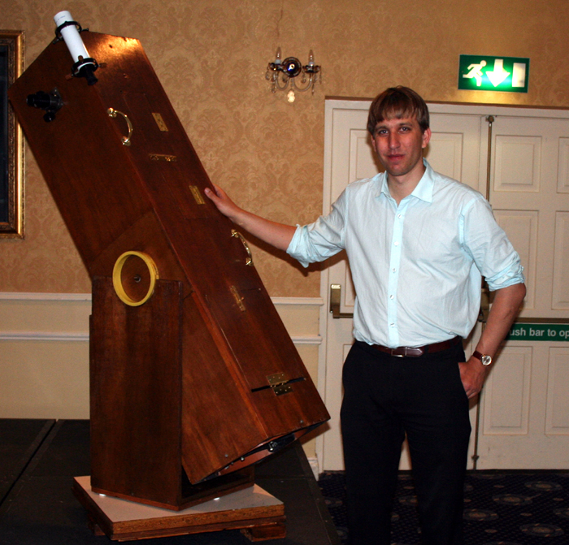
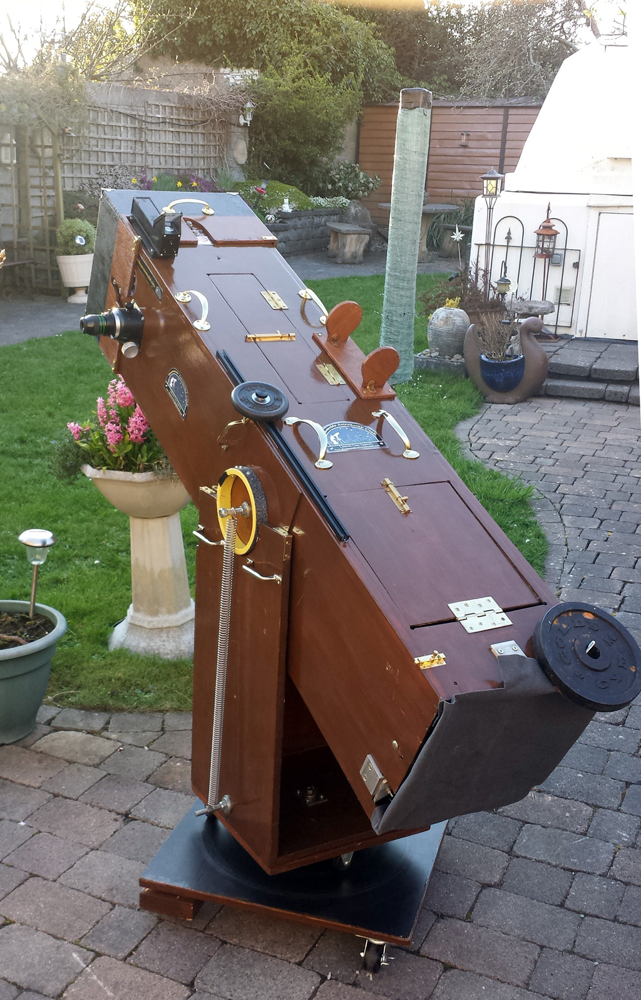
A solar filter was made for the scope — an 11-inch full aperture filter. Lids were made to protect it while not in use. On the outer lid is a swivel to allow the filter to operate as a 4-inch off-axis filter. A solar finder was also made, which makes centering the sun in the eyepiece very easy.
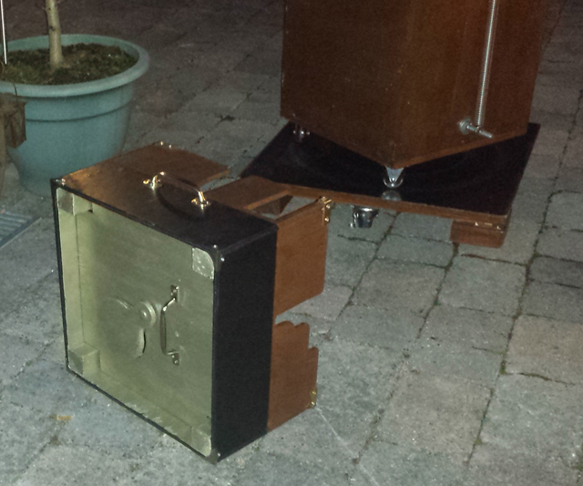
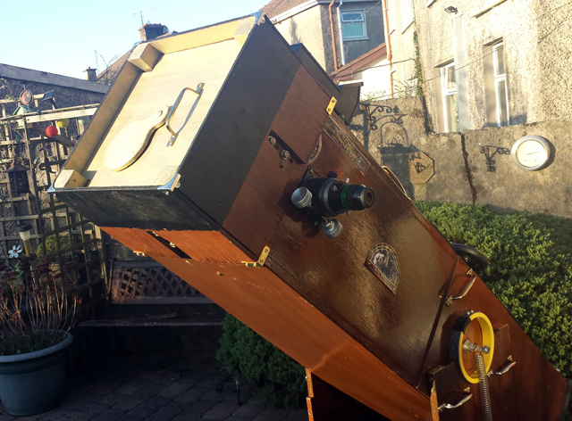
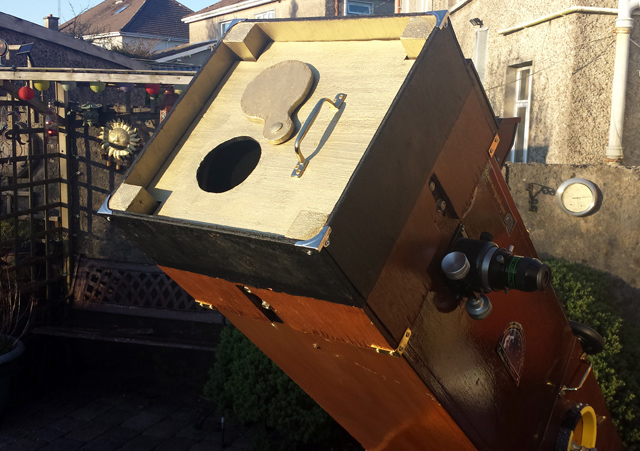
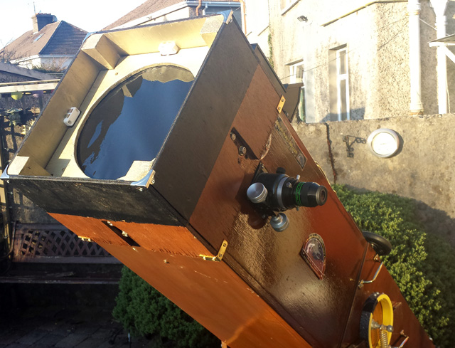
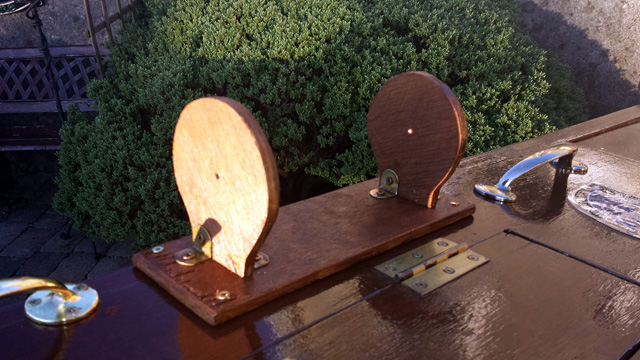
This set includes a 10" Meade LX3 F10 Schmidt Cassegrain Telescope (SCT). A Celestron powertank is used to run its right ascension axis during observing sessions. Two cases are included which hold a set of eyepieces, filters and accessories. Click here for the complete list.
This scope was manufactured in 1984. At the time, Meade coated the secondary mirror with a silver coating which provided as high a reflective coating as possible. This coating however is not robust and oxidizes over time, so in February 2013 the secondary mirror was recoated and the scope is now back in perfect working order.
A full aperture 10-inch solar filter was also made for this scope for white light solar viewing.
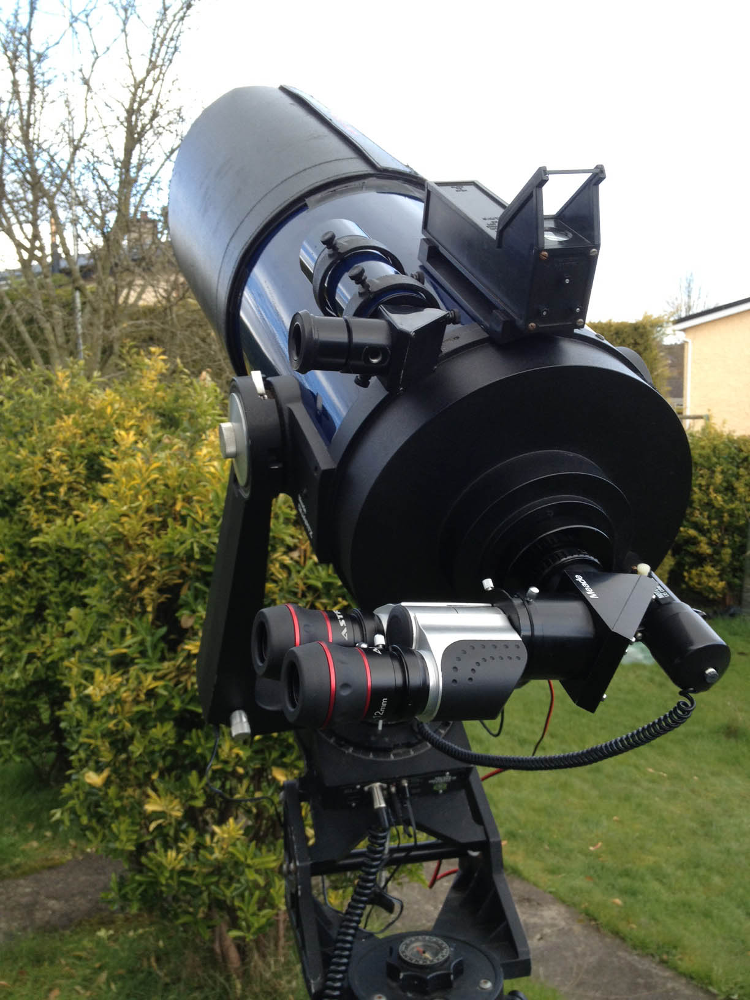
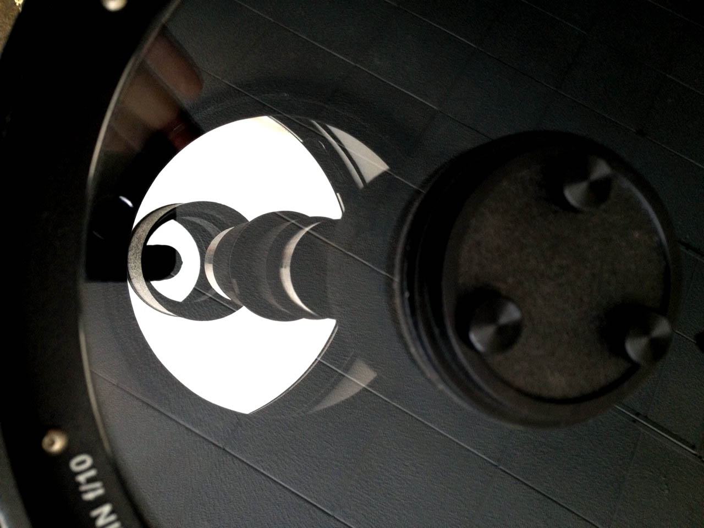
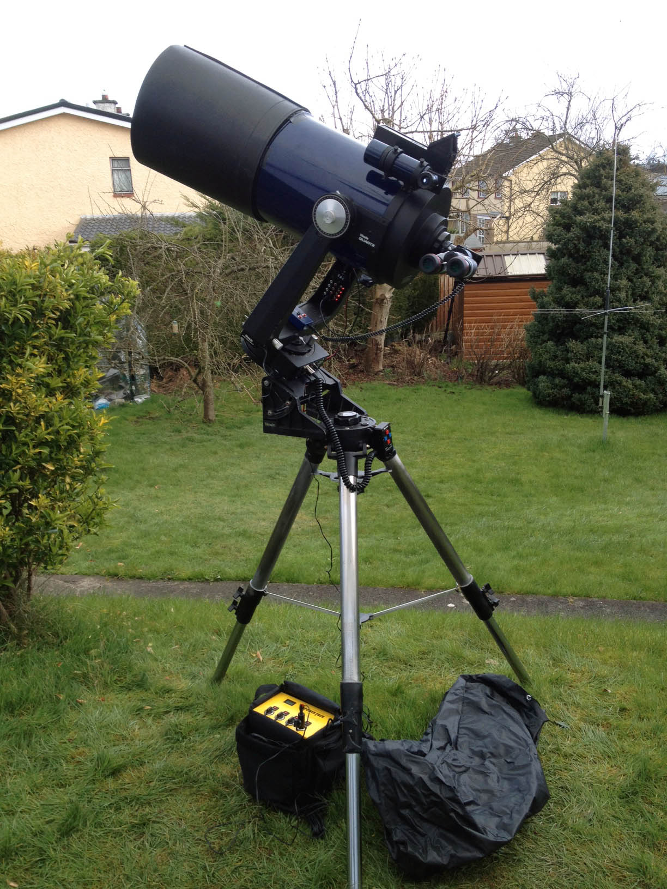
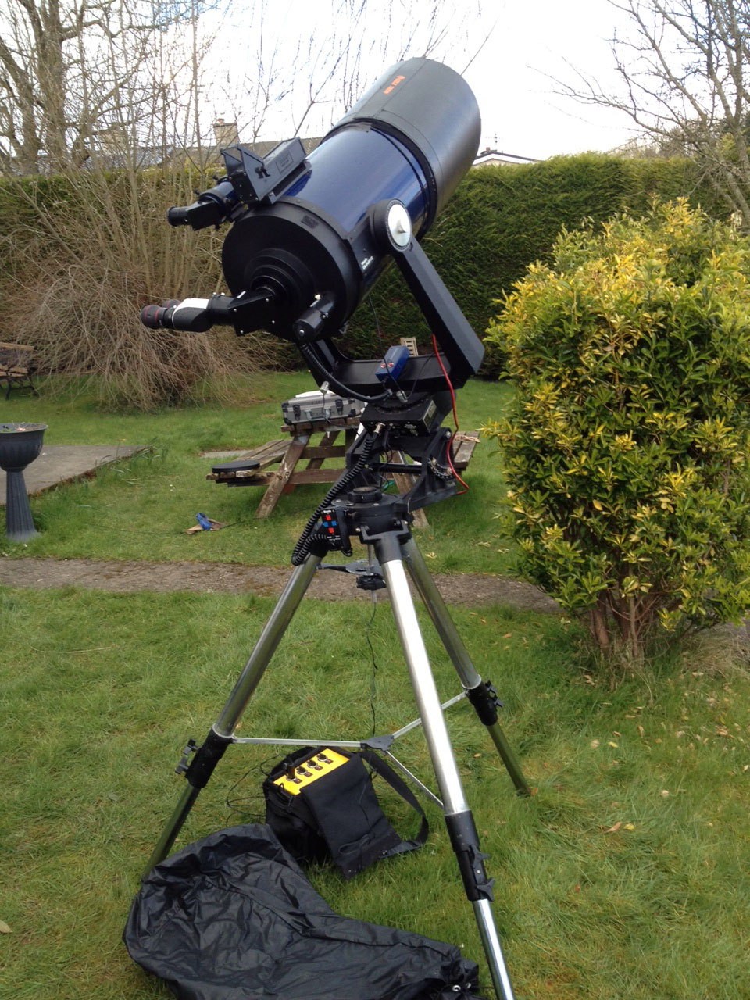
The club owns a set of 25×100 Celestron Skymaster binoculars, mounted on a parallelogram "unimount" system and tripod. This provides a means of steadily holding these heavy binoculars and allows the height to be changed while keeping the same object in the field of view — great for observing nights.
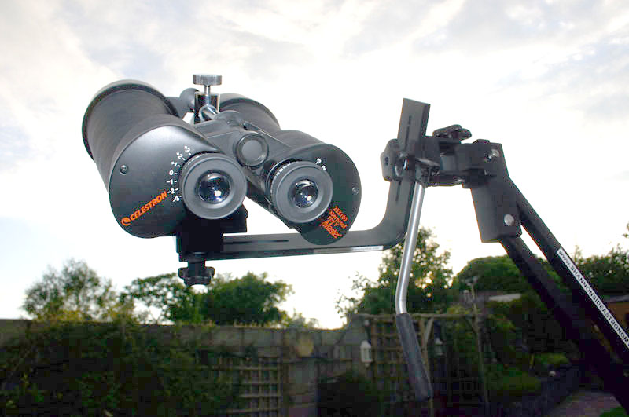
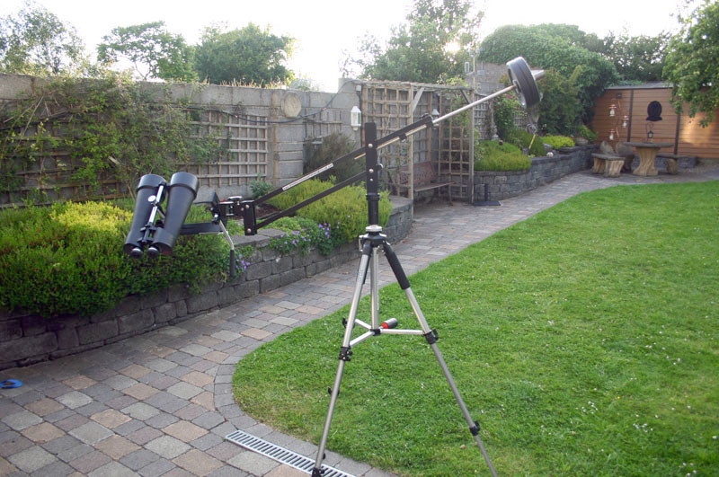
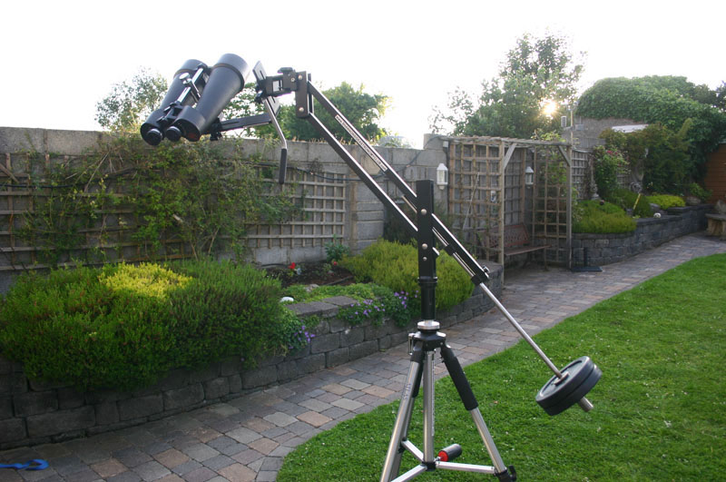
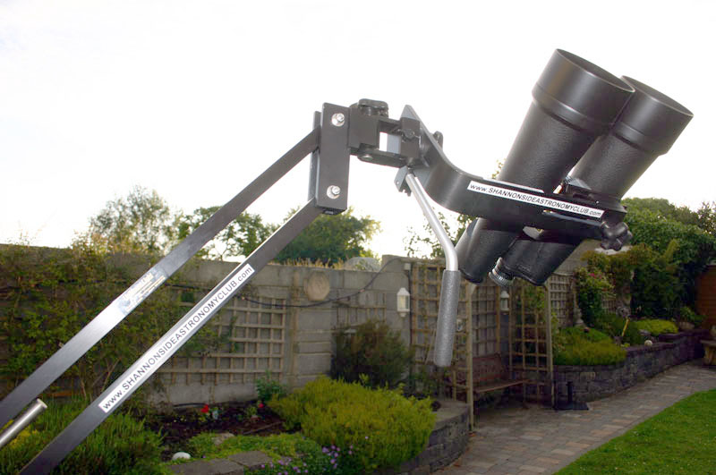